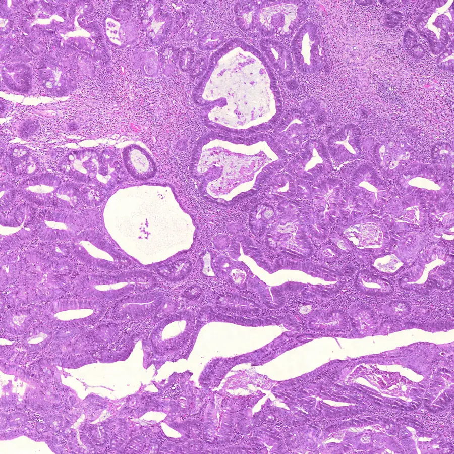

Digital-pathology AI, end to end
Training models on whole-slide images, packaging them as containerized inference services, and shipping them through versioned, automated pipelines into enterprise environments and to corporate partners.
I'm Milad (Milo). I ship deep-learning products for digital pathology and, increasingly, the agentic LLM systems built around them. PhD in Systems Design Engineering from the University of Waterloo, with papers in Nature journals, IEEE Transactions, MICCAI and ICCV.

Training models on whole-slide images, packaging them as containerized inference services, and shipping them through versioned, automated pipelines into enterprise environments and to corporate partners.
Tool-using agents wired to real engineering data, such as Azure DevOps through MCP servers. Deterministic logic does the scoring; the LLM synthesizes and explains. Examples: PI-planning intelligence across SAFe backlogs, and a daily briefing agent for algorithm programs. In the open, I'm building concordat, which makes agents follow their protocols by construction.
Pairing foundation models on whole-slide images with an LLM agent, so a pathologist can ask questions of a slide and get grounded, explainable answers.
I'm most motivated by AI that changes outcomes for patients, and by teams that ship.
Before machine learning took over my work, I spent years in modern C++, building a real-time surgical navigation system with clean architecture, design patterns, build systems, SQL and GLSL in an agile team. That background still shapes how I build ML: tests first, automated pipelines, and performance work that reaches down to Python, C++ and CUDA.
My PhD at Kimia Lab focused on getting deep networks to generalize to hospitals and data they have never seen, through domain generalization, meta-learning and federated learning.
I look for inefficiencies before they become bottlenecks, then automate them away.
A model isn't done until it's containerized, versioned and deployed behind a pipeline someone else can run.
I'm comfortable across engineering, product and business, and I give stakeholders clear engineering insight to decide with.
In agentic systems, code does the scoring and the LLM does the explaining. Results stay auditable.
Own digital-pathology AI products end to end: model training on whole-slide images, containerized inference services on Triton with custom backends and ONNX Runtime, and versioned CI/CD deployment through GitLab/GitHub and W&B registries. Now building multi-agent LLM systems on top of engineering data.
Research on generalizing deep networks to unseen, out-of-distribution hospitals in histopathology: meta-learning, domain generalization, federated learning and self-supervised representation learning.
Built a real-time surgical navigation system in modern C++, with clean architecture, design patterns, build systems, SQL and GLSL, in an agile/scrum team.
GPU-based illustrative volume rendering for intraoperative virtual endoscopy, touchless gesture control of 3D pre-operative images in the OR, and neural data-acquisition tooling.
Selected publications. Thesis: Meta-Learning and Domain Generalization, University of Waterloo, 2023.
ICCV 2023 Workshop (CVAMD) · Paris · Sikaroudi, Hosseini, Rahnamayan
Scientific Reports · Nature Portfolio
Communications Biology · Nature Portfolio
IEEE Transactions on Medical Imaging
IEEE EMBC · 44th Annual International Conference of the IEEE Engineering in Medicine & Biology Society
Typed sessions for AI agents. Rules like "never refund before verifying identity" usually live in a prompt and are hoped for. In concordat, an agent is a Python class whose interface is a protocol: the model is only offered the tools that are legal in the current state, budgets on tokens, tool calls and dollars hold across handoffs, and a subclass that skips its parent's safety steps is rejected when it's defined.
Changes made without the explicit "yes" the airline policy requires (Claude Haiku 5.5):
With gpt-4.1 the standard agent made 26 such changes and concordat again made 0. Setup, limits and all runs.
Code for the ICCV-W paper: a framework that combines multiple levels of feature abstraction to generalize histopathology classifiers to unseen hospitals.
How well do vision models pre-trained on natural images generalize to histopathology? The code behind the Scientific Reports paper.
Touchless interaction with 3D-rendered CT and MRI in the operating room, built on VTK and the Leap Motion SDK. Hand gestures zoom, rotate and switch colour maps.
A daily audit for shared GPU machines: monitors users and resource usage, enforces courtesy caps, finds stale files and unused Docker images, and writes team-ready reports.
Experiments in cache-friendly C++: loop reordering and transposed layouts for faster matrix multiplication, plus softmax and normalization kernels, each with tests and cache hit/miss comparisons.
An implementation of Hinton's forward-forward algorithm, an alternative to back-propagation, trained on CIFAR-10 and CIFAR-100.